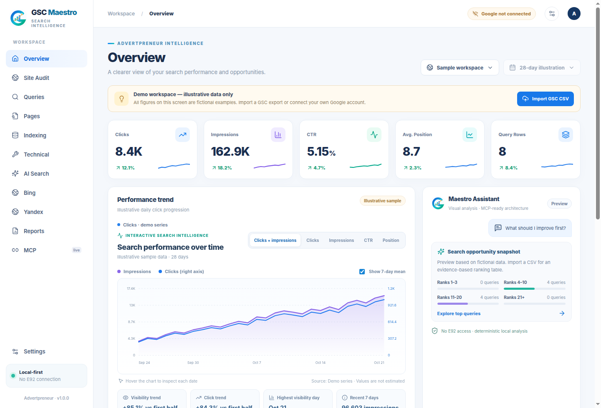

Turn search data into a clear next step.
Explore clicks, impressions, CTR, average position, top queries, ranking distribution and opportunity candidates—with real synced or imported data clearly separated from examples.
One focused desktop workspace for Google Search Console, Bing Webmaster, Yandex Webmaster, site audits, and AI search signals. Your accounts, your credentials, your data.
Open-source (MIT) · Linux desktop + Node.js MCP server · Bring your own Google/Bing/Yandex accounts

Bring authorized search data together with on-demand public website checks. Keep the underlying sources distinguishable instead of blending unlike metrics into one number.
Explore clicks, impressions, CTR, average position, top queries, ranking distribution and opportunity candidates—with real synced or imported data clearly separated from examples.
Connect your own Google, Bing and Yandex credentials. Each provider’s authorization, reports and availability stay explicit.
Run bounded public crawls and review on-page or indexing findings with source-aware summaries.
Use a local MCP server and visual report tools. Remote access is optional and requires separate secure configuration.
A dense but legible desktop with a clear overview, search queries, pages, indexing, Bing, Yandex, AI Search, reports and MCP. Each tab keeps the job and source in view.
GSC Maestro is designed around transparent access, local storage, and opt-in connections.
No developer OAuth tokens, client property data or shared keys are bundled in the public source.
Data imports and demonstrations are labelled. Provider measurements do not get passed off as one universal metric.
Browse the MIT-licensed project, reproduce checks, and extend your own local intelligence stack.
GSC Maestro ships as source code for Linux desktop and Node.js MCP. External providers require your own authorized accounts and permissions. There is no prebuilt public binary in this repository yet.
# Node.js 22+, Rust and Tauri Linux dependencies required
$ git clone https://github.com/haseebgb92/GSC-Maestro.git
$ cd GSC-Maestro
$ npm ci
$ npm run desktopThere is no bundled paid LLM service. Google, Bing and Yandex govern their own quotas, API access and permissions. Configure your own credentials.
You can explore the labelled sample interface, import supported Search Console CSV exports, and use bounded public-site audits. Live provider reports require authorized access.
No. Yandex OAuth permissions, endpoint behavior and external API availability can limit which data is accessible.
A local stdio MCP server is included. Optional remote ChatGPT-specific OAuth requires separate HTTPS hosting and security configuration; it is disabled by default.